Interfaccia utente e navigazione¶
Ethos può essere utilizzato interamente con l'encoder rotativo di destra
(ruotalo per spostare l'evidenziazione, premilo per ENT) e con il tasto RTN
per uscire da un menu: il touchscreen, dove presente, è una scorciatoia per le
stesse azioni, non un modo di lavorare separato. I tasti MDL, DISP e SYS
portano direttamente a Configurazione del modello, Configurazione delle
schermate e Configurazione del sistema rispettivamente (le stesse tre schede
della barra inferiore); una pressione prolungata su RTN ti farà tornare alla
schermata principale da qualsiasi sottomenu.
Menu di reset¶
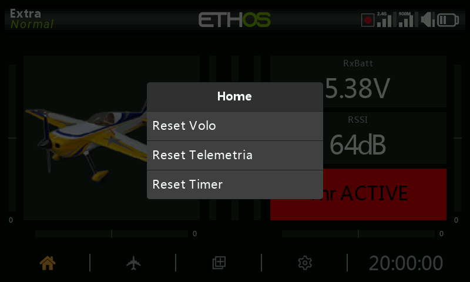
Premendo a lungo il tasto ENT dalla schermata principale si accede al menu di
reset:
- Azzeramento del volo — azzera la telemetria, i timer e gli interruttori di funzione, e riesegue la checklist pre-volo.
- Azzeramento della telemetria — azzera solo la telemetria.
- Azzeramento dei timer — azzera solo i timer.
- Blocca il touchscreen — si ottiene anche premendo contemporaneamente
ENTePAGEper 1 secondo dalla schermata principale, oppure come trigger di una funzione speciale.
Controlli per effettuare modifiche¶
Aggiungi elementi funzionali — è possibile creare un nuovo elemento
funzionale, come un timer, un interruttore logico, una funzione speciale, una
curva o una variabile, toccando il simbolo + accanto alle intestazioni
delle colonne nel menu corrispondente. Sulle radio senza touchscreen,
evidenzia un elemento esistente, premi ENT e seleziona Aggiungi dalla
finestra di dialogo che si apre: naturalmente questa opzione funziona anche
sulle radio con touchscreen.
Tastiera virtuale¶
Basta toccare un qualsiasi campo di testo (o premere ENT su di esso) per
visualizzare la tastiera. Il tasto Backspace cancella i caratteri a sinistra
del cursore; PAGE cancella i caratteri a destra del cursore e, una volta
arrivato alla fine a destra, prosegue cancellando i caratteri rimanenti a
sinistra. Tocca il campo di testo per spostare il cursore in quella posizione;
in alternativa, premi il tasto SYS per spostare il cursore a sinistra o il
tasto DISP per spostarlo a destra. Il tasto ?123/abc permette di
passare dalla tastiera alfabetica a quella numerica, che contiene anche i
caratteri speciali:
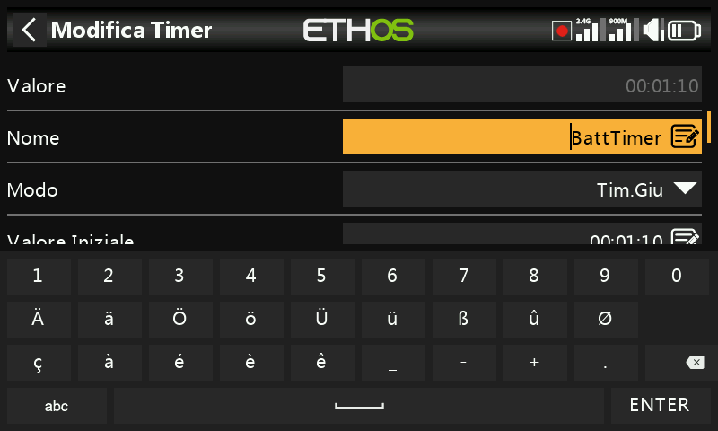
Sulle radio senza touchscreen, premendo ENT su un campo di testo si
accede direttamente alla modalità di modifica: ruota l'encoder rotativo per
scorrere i caratteri minuscoli, maiuscoli e i numeri, seguiti dai caratteri
speciali, e premi ENT per inserire ciascun carattere. Il tasto MDL cambierà
la maiuscola/minuscola del carattere immediatamente a destra del cursore (e
tutti i caratteri successivi rimarranno nella nuova maiuscola/minuscola fino a
quando non verrà modificata nuovamente). Il tasto PAGE cancella i caratteri a
destra del cursore; SYS/DISP spostano il cursore a sinistra/destra.
Controlli del valore numerico¶
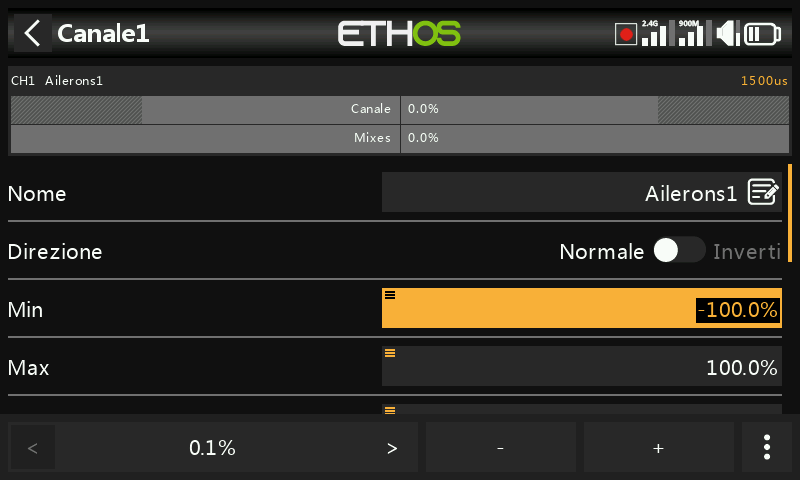
Quando si tocca un valore numerico, nella parte inferiore dello schermo appare
una finestra di dialogo con i controlli del valore numerico: i tasti
</> modificano la dimensione del passo (salendo di decina in
decina, ad esempio 0,01/0,1/1,0/10,0), i tasti -/+ (o l'encoder
rotativo) aumentano o diminuiscono il valore in base al passo selezionato, e il
pulsante Altro apre ulteriori opzioni:
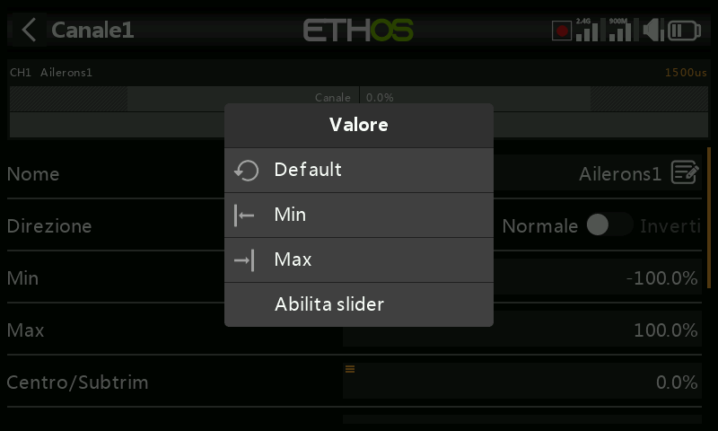
- Ripristina il valore predefinito del campo
- Imposta al minimo / imposta al massimo
- Sostituisce i tasti di regolazione con un cursore (slider)
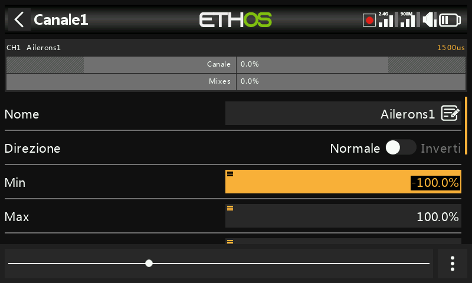
Il cursore (regolabile anche con l'encoder rotativo) permette di regolare rapidamente il valore; per tornare ai tasti di regolazione del numero seleziona Disabilita slider. Anche il valore della portata telemetrica può essere modificato in modo simile:
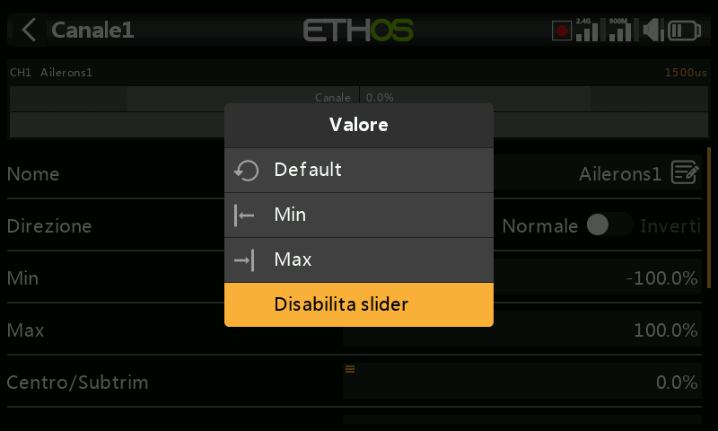
La funzione Opzioni¶
Quasi ovunque sia previsto un valore o una sorgente, una
pressione prolungata del tasto ENT farà apparire una finestra di dialogo
delle Opzioni: i campi con questa funzione possono essere identificati
dall'icona del menu (simbolo dell'hamburger) nell'angolo in alto a sinistra del
campo.
Opzioni di valore¶
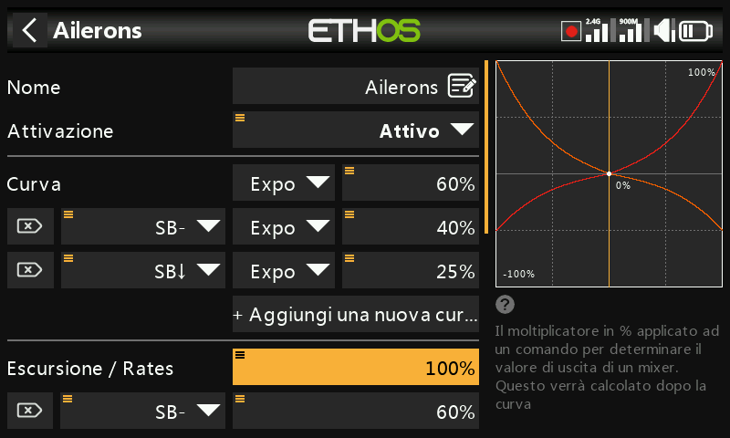
La finestra di dialogo delle opzioni del valore mostra quale parametro si sta
configurando e permette di scegliere se impostarlo al massimo o al minimo,
oppure se pilotarlo con una sorgente (ad esempio un potenziometro, per
regolare il valore in volo). Se premi a lungo ENT su un campo valore che è
già stato modificato per utilizzare una sorgente, si apre una finestra di
dialogo che ti permette di convertire il valore attuale della sorgente in un
valore fisso:
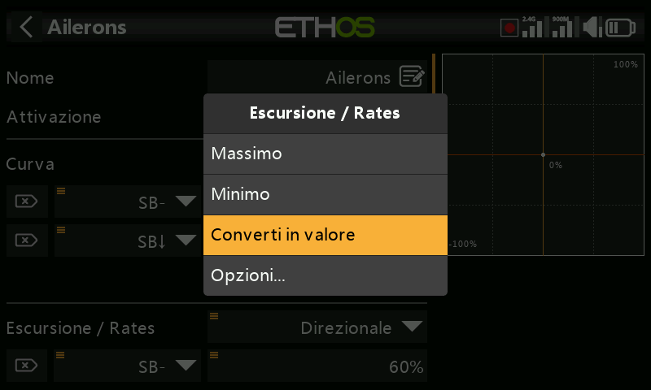
Scelta di una sorgente¶
Selezionando Usa come sorgente si apre un selettore a due colonne: prima una categoria (analogici, interruttori, interruttori logici, trim, canali, un asse del giroscopio, un canale trainer, un timer, un sensore di telemetria o alcuni valori speciali), poi il membro specifico:
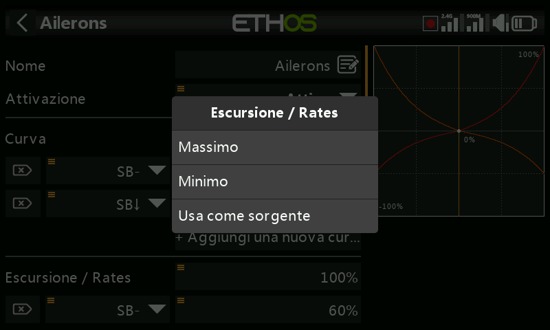
Una volta impostata la sorgente, la stessa pressione prolungata apre le opzioni specifiche per il tipo di sorgente:
Qualsiasi sorgente —
- Invertire — permette di negare o invertire la sorgente (ad esempio è attiva quando un interruttore non è alzato, invece di quando lo è).
- Edge — agisce una sola volta sulla transizione (da Falso a Vero o da Vero
a Falso), invece di restare attiva per tutta la durata dello stato; viene
indicata con il prefisso
†sulla sorgente. È disponibile sugli interruttori in generale e, in particolare, nella condizione di attivazione dell'interruttore logico Sticky.
Sorgenti stick — opzioni di tipo calibrazione/subtrim:
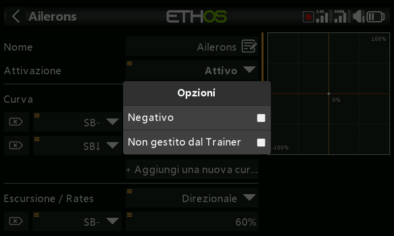
Sorgenti interruttore —
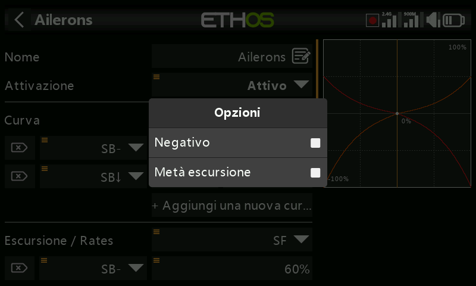
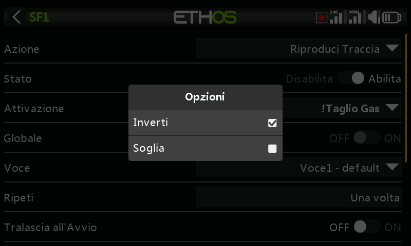
- Negativo — permette di invertire l'azione dell'interruttore.
- Metà escursione — con un interruttore 2-POS o un interruttore logico come sorgente, l'intervallo di uscita diventa [0-100%] invece di [-100%-100%].
Sorgenti trim —
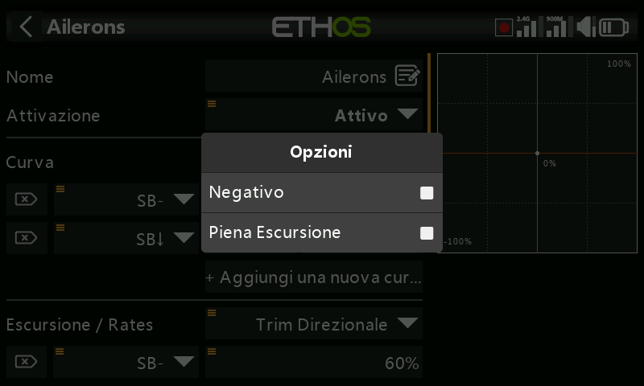
- Negativo — consente di invertire l'azione del trim, utile nei mix Azioni.
- Piena escursione — per impostazione predefinita i trim hanno un intervallo di +/- 25%; quando vengono utilizzati come sorgente possono essere portati a un intervallo completo di +/- 100%.
- Ignora l'input del Trainer — su un interruttore logico le sorgenti possono essere impostate in modo da ignorare le sorgenti provenienti dall'ingresso del trainer. Un'applicazione tipica è quella in cui l'interruttore logico è configurato per rilevare il movimento degli stick dell'istruttore master (ad esempio per consentire un intervento immediato se l'allievo sbaglia), evitando che anche gli ingressi degli stick dell'allievo attivino l'interruttore.
Sorgenti variabile —
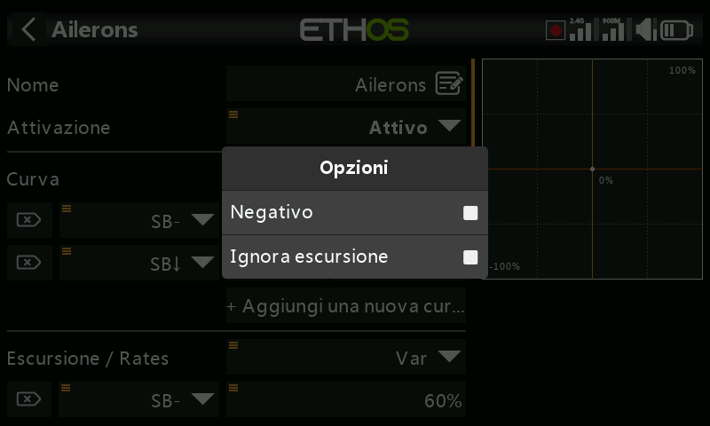
- Negativo — il valore del Var diventerà negativo in questo caso.
- Ignora l'intervallo — alcuni campi hanno intervalli asimmetrici, come i parametri Min/Max delle Uscite, che hanno intervalli rispettivamente di (-150% a 0%) e (0% a +150%). A meno che la variabile utilizzata come sorgente di quel campo non abbia un intervallo identico, occorre attivare questa opzione per saltare la conversione automatica dell'intervallo eseguita da Ethos ed evitare valori inaspettati.
Sorgenti sensore di telemetria — su una sorgente telemetrica la finestra di dialogo delle opzioni consente di utilizzare il suo valore massimo o minimo invece della lettura istantanea (alcuni sensori hanno opzioni aggiuntive specifiche per quel sensore):
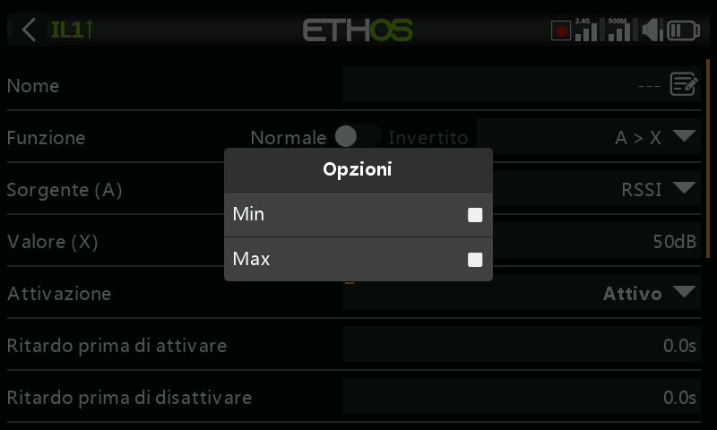
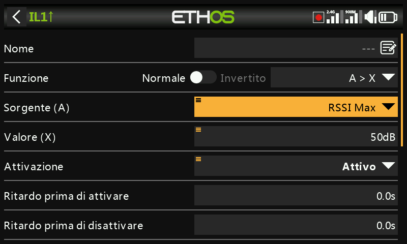